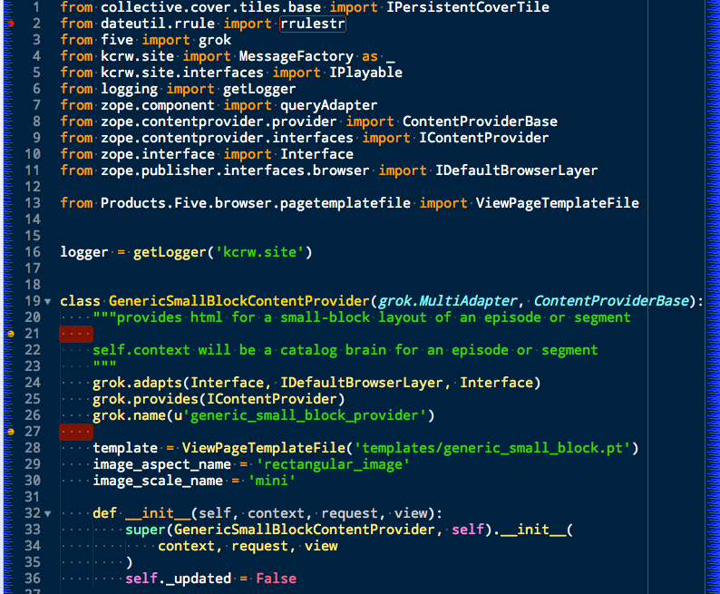

Code linting shows you mistakes you've made in your source before you attempt
to run the code. This saves time. Sublime Text has an available plugin for code
linters called SublimeLinter.
Python has a couple of great tools available for linting, the pep8 and
pyflakes packages. Pep8 checks for style violations, lines too long,
extra spaces and so on. Pyflakes checks for syntactic violations, like
using a symbol that isn't defined or importing a symbol you don't use.
Another Python linting package, flake8 combines these two, and adds in
mccabe, a tool to check the cyclomatic complexity of code you write. This
can be of great help in discovering methods and functions that could be
simplified and thus made easier to understand and more testable.
There is a nice plugin for the SublimeLinter that utilizes flake8. For it to
work, the plugin will need to have a Python executable that has the Python
tools it needs installed.
Make sure that the python packages you need are installed in your main
python install, rather than a virtualenv.
Use Python packaging tools to install the required packages:
$ pip install flake8
Downloading/unpacking flake8
[...]
Downloading/unpacking pyflakes>=0.7.3 (from flake8)
[...]
Downloading/unpacking pep8>=1.4.6 (from flake8)
[...]
Downloading/unpacking mccabe>=0.2.1 (from flake8)
[...]
Installing collected packages: flake8, pyflakes, pep8, mccabe
[...]
Successfully installed flake8 pyflakes pep8 mccabe
Cleaning up...
$
Your Python install now has the required packages installed.
try typeing these command to make sure:
$ flake8
Usage: flake8 [options] input ...
flake8: error: input not specified
Now install SublimeLinter and then SublimeLinter-flake8 using Package Control.
Here are the settings you can add to Preferences -> Package Settings ->
SublimeLinter -> Settings - User:
{
//...
"linters": {
"flake8": {
"@disable": false,
"args": [],
"builtins": "",
"excludes": [],
"ignore": "",
"max-complexity": 10,
"max-line-length": null,
"select": ""
}
},
//...
"paths": {
"linux": [],
"osx": [
"/Users/cewing/virtualenvs/sublenv/bin"
],
"windows": []
},
"python_paths": {
"linux": [],
"osx": [
"/Users/cewing/virtualenvs/sublenv/bin"
],
"windows": []
},
//...
}
The paths key points to the path that contains the flake8 executable
command.
The python_paths key points to the location of the python executable to be
used.
The settings inside the flake8 object control the performance of the
linter. Read more about them here.
